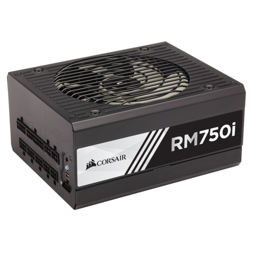

All desktop computers have a Power Supply Unit or PSU for short, Laptop computers on the other hand have a battery and a charger. Both components rely on the same principle , they take power from the outlet that the charger or PSU is plugged into and they convert this energy into energy that the computer can utilize and send around to all the other components. The Power Source of the computer, no matter if it is a PSU or battery, is the most important component for a computer system to actually be able to turn on as without any electricity there will be no chance of the computer turning on.
As you may have noticed in the image showing a typical PSU, there is a fan mounted on the top of it. This is because large amounts of heat are produced when the PSU is under a streneuous load, this principle applies to the other elements of hardware that are present in a computer and that use electricity. In order to counteract the heat that is produced fans are typically used to dissipate heat and send it out of the computer.
All the processing modules such as the CPU and GPU have a cooling method. Prebuilt computers usually come with a cooling fan on the CPU and all GPUs come with soem type of cooling fan attached . However, there are also fans that are attached to the computers case that blow air across heat producing surfaces and help move the heat out the back. Some individuals who choose to build their own computer or buy a special computer, have the opportunity to have a water cooling system. Water cooling can be used on the CPU, GPU, or both in a loop. Water cooling works on the principle that water absorbs heat, and this heat is carried in the liquid to a radiator where the liquid is cooled. Some computers may have a water cooling loop that cools the RAM and other unnecesary items such as the PSU just to show off.
In this image one can observe that both the CPU and GPU are in one water cooling loop. Located on the left side of the computer case, one can see a white fan which is used to pull air out of the case and "exhaust" the hot air.
Pros of Using Water Cooling